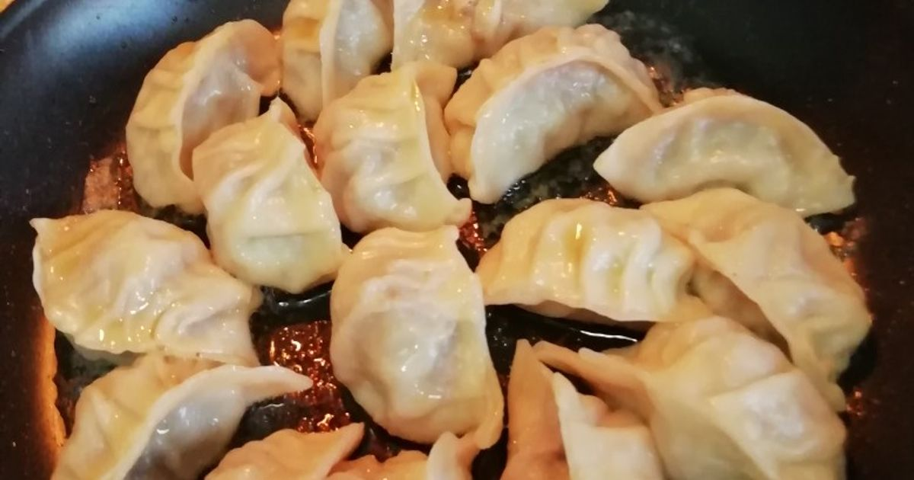

GYOZA ALLE VERDURE
porzioni per 30 gyoza, difficoltà 2/5
| INGREDIENTI | QUANTITÀ |
|---|---|
| Farina 00 | 300 g |
| Acqua tiepida | 150 g |
| Carote | 150 g |
| Cavolo cappuccio | 150 g |
| Zucchine | 150 g |
| Cipolla | 50 g |
| Salsa di soia | q.b. |
| Sale | q.b. |
PROCEDIMENTO
- Aggiungere l’acqua tiepida alla farina e al pizzico di sale
- Mescolare fino a raggiungere un composto omogeneo
- Fare riposare l’impasto per circa 15 minuti
- Per il ripieno tagliare finemente le verdure e cuocerle in padella
- Aggiungere della salsa di soia q.b. a fine cottura
- Stendere molto finemente l’impasto e ricavare dei cerchi di impasto aiutandosi con un bicchiere
- Prendere un dischetto di impasto sul palmo della mano ed aggiungere un po’ di ripieno
- Chiudere il dischetto a mezza luna creando delle pieghe come in figura
- Cucinare al vapore o alla piastra per qualche minuto secondo le proprie preferenze